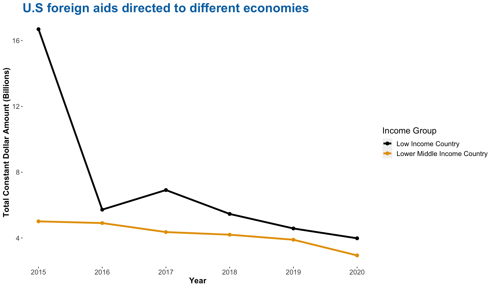
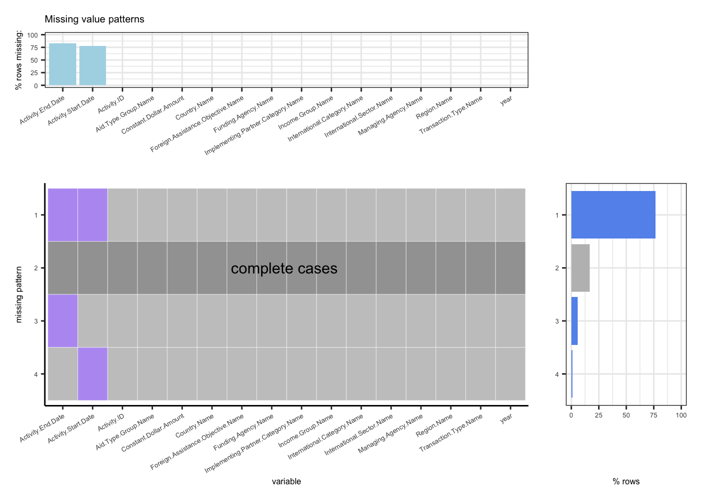
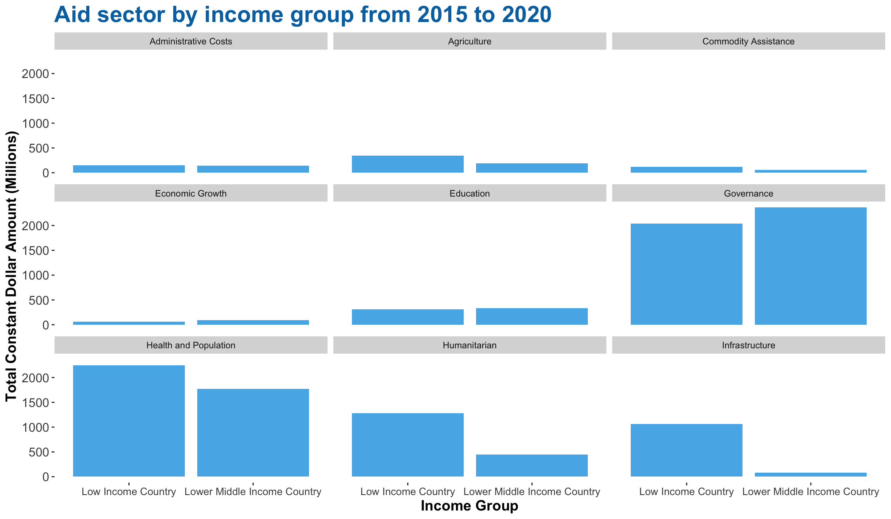

Chapter 6 1. Trend of foreign assistance towards objective and deep dive into the change
From the following graph, it’s obvious that the economic assistance is greater than military assistance for every year and pattern of foreign assistance objective is different over time. The military assistance indicates a reasonable fluctuating trend, however, the economic assistance shows a critically downward trend as of 2017. Thus, we are intended to explore the reason for the decrease change of economic assistance.
data7 <- subset(us_foreign_aid_sample,year%in%c(2016,2017,2018,2019,2020)) %>%group_by(year,Foreign.Assistance.Objective.Name) %>%
summarize(Total = sum(Constant.Dollar.Amount)/100000000)
#data7
#data1$year = as.factor(data1$year )
ggplot(data7,aes(x=year,y=Total))+geom_line(aes(color=Foreign.Assistance.Objective.Name))+ggtitle(" U.S foreign aid towards different Objective") +
theme(axis.text.x = element_text(angle = 90, hjust = 1,size=8),axis.text.y = element_text(size=8))+
theme(legend.title=element_text(size=10), legend.text=element_text(size=8),
axis.title.x=element_text(vjust=2, size=8,face = "bold"),
axis.title.y = element_text(vjust=2, size=8,face = "bold"),
panel.grid.major=element_line(colour=NA),
panel.background = element_rect(fill = "transparent",colour = NA),
plot.background = element_rect(fill = "transparent",colour = NA),
plot.title =element_text(face='bold', color ='steelblue2')
)+
guides(shape = guide_legend(override.aes = list(size = 2)))+
labs(x="year", y="Total (billion)")
The trend of economic assistance in Low Income Country and Lower Middle Income Country is similar indicated by the following graph. Then, we want to deep dive into economic assistance towards different region.
data7 <- subset(us_foreign_aid_sample,year%in%c(2016,2017,2018,2019,2020)&Foreign.Assistance.Objective.Name=="Economic") %>%group_by(year,Income.Group.Name) %>%
summarize(Total = sum(Constant.Dollar.Amount)/100000000)
#data7
#data1$year = as.factor(data1$year )
ggplot(data7,aes(x=year,y=Total))+geom_line(aes(color=Income.Group.Name))+ggtitle(" U.S foreign aid towards Income Group") +
theme(axis.text.x = element_text(angle = 90, hjust = 1,size=8),axis.text.y = element_text(size=8))+
theme(legend.title=element_text(size=10), legend.text=element_text(size=8),
axis.title.x=element_text(vjust=2, size=8,face = "bold"),
axis.title.y = element_text(vjust=2, size=8,face = "bold"),
panel.grid.major=element_line(colour=NA),
panel.background = element_rect(fill = "transparent",colour = NA),
plot.background = element_rect(fill = "transparent",colour = NA),
plot.title =element_text(face='bold', color ='steelblue2')
)+
guides(shape = guide_legend(override.aes = list(size = 2)))+
labs(x="year", y="Total (billions)")
We are interested in “Sub-Saharan African” and “Middle East and North Africa” groups since the later has a fancy fluctuating trend between 2016 to 2020 and the former has a similar trend with economic assistance as of 2017, which may be the main reason to explain the downward trend. For other groups, the economic assistance does not change too much.
data6 <- subset(us_foreign_aid_sample,year%in%c(2016,2017,2018,2019,2020)&Foreign.Assistance.Objective.Name=="Economic") %>%group_by(year,Region.Name) %>%
summarize(Total = sum(Constant.Dollar.Amount)/100000000)
#data6
#data1$year = as.factor(data1$year )
ggplot(data6,aes(x=year,y=Total))+geom_line(aes(color=Region.Name))+ggtitle("Economic assistance towards different region") +
theme(axis.text.x = element_text(angle = 90, hjust = 1,size=8),axis.text.y = element_text(size=8))+
theme(legend.title=element_text(size=10), legend.text=element_text(size=8),
axis.title.x=element_text(vjust=2, size=8,face = "bold"),
axis.title.y = element_text(vjust=2, size=8,face = "bold"),
panel.grid.major=element_line(colour=NA),
panel.background = element_rect(fill = "transparent",colour = NA),
plot.background = element_rect(fill = "transparent",colour = NA),
plot.title =element_text(face='bold', color ='steelblue2')
)+
guides(shape = guide_legend(override.aes = list(size = 2)))+
labs(x="year", y="Total(billions)")
Now, we want to explore the trend of implementing partner category for economic assistance in “Sub-Saharan African” region. From the graph below, we can see the government category has decreased a lot as of 2017 but the change for other categories have minor changes, which is consistent with the change of economic assistance as of 2017 in “Middle East and North Africa”
data1 <- subset(us_foreign_aid_sample,Region.Name=="Sub-Saharan Africa"
& year%in%c(2016,2017,2018,2019,2020) & Foreign.Assistance.Objective.Name=="Economic") %>%group_by(year,Implementing.Partner.Category.Name) %>%
summarize(Total = sum(Constant.Dollar.Amount)/100000000)
#data1$year = as.factor(data1$year )
ggplot(data1,aes(x=year,y=Total))+geom_line(aes(color=Implementing.Partner.Category.Name))+ggtitle(" Deep dive into economic assistance decrease: \n Sub-Saharan Africa") +
theme(axis.text.x = element_text(angle = 90, hjust = 1,size=8),axis.text.y = element_text(size=8))+
theme(legend.title=element_text(size=10), legend.text=element_text(size=8),
axis.title.x=element_text(vjust=2, size=8,face = "bold"),
axis.title.y = element_text(vjust=2, size=8,face = "bold"),
panel.grid.major=element_line(colour=NA),
panel.background = element_rect(fill = "transparent",colour = NA),
plot.background = element_rect(fill = "transparent",colour = NA),
plot.title =element_text(face='bold', color ='steelblue2')
)+labs(x="year",y="Total(billions)")
The below figure is the trend of implementing partner category for economic assistance in “Middle East and North Africa” region. It shows that the government category is the dominant factor that affects the economic assistance. Similarly, the trend is consistent with the change of economic assistance in “Middle East and North Africa” region.
data1.1 <- subset(us_foreign_aid_sample,Region.Name=="Middle East and North Africa"
& year%in%c(2016,2017,2018,2019,2020)& Foreign.Assistance.Objective.Name=="Economic") %>%group_by(year,Implementing.Partner.Category.Name) %>%
summarize(Total = sum(Constant.Dollar.Amount)/100000000)
#data1$year = as.factor(data1$year )
ggplot(data1.1,aes(x=year,y=Total))+geom_line(aes(color=Implementing.Partner.Category.Name))+ggtitle(" Deep dive into economic assistance decrease: \n Middle East and North Africa") +
theme(axis.text.x = element_text(angle = 90, hjust = 1,size=8),axis.text.y = element_text(size=8))+
theme(legend.title=element_text(size=10), legend.text=element_text(size=8),
axis.title.x=element_text(vjust=2, size=8,face = "bold"),
axis.title.y = element_text(vjust=2, size=8,face = "bold")
,panel.grid.major=element_line(colour=NA),
panel.background = element_rect(fill = "transparent",colour = NA),
plot.background = element_rect(fill = "transparent",colour = NA),
plot.title =element_text(face='bold', color ='steelblue2')
)+guides(shape = guide_legend(override.aes = list(size = 20)))+
labs(x="year",y="Total(billions)")
#2. Explore the rank of foreign assistance of country in “South and Central Asia” region in recent 5 years and deep dive into the top country
We are interested in the countries in “East Asia and Oceania” region so we plot the dot plot to visualize the rank of average assistance they received from 2016 to 2020. From the following plot, it’s obvious that Afghanistan get the most assistance, so we want to explore the trend of assistance it received.
# South and Central Asia
data2 <- subset(us_foreign_aid_sample,Country.Name%in%c("Nepal", "Afghanistan", "Bangladesh" , "India", "Tajikistan","Pakistan",
"Uzbekistan","Kyrgyzstan","Sri Lanka", "Bhutan" )& year%in%c(2016,2017,2018,2019,2020))
data3<-data2%>% group_by(year,Country.Name
) %>%
summarise(Total = sum(Constant.Dollar.Amount))%>% group_by(Country.Name)%>%
summarise(Average=mean(Total)/100000000)%>%
ungroup()
ggplot(data3, aes(Average,
reorder(Country.Name,Average) #color=Country.Name
)) +
geom_point() +ggtitle("Rank of country in South and Central Asia",
"Based on 2016 to 2020") +
labs(x ="Average( Billions)", y =" country")+
theme_grey(10)+
theme(plot.title =element_text(face='bold', color ='steelblue2'))
The foreign assistance towards Afghanistan changes like a roller coaster. From 2011 to 2012, the assistance increased over 200% but then it decreased nearly 80% by 2014, then it’s a huge increase again in 2015 and fell to the bottom of the valley until 2020.
data4<-subset(us_foreign_aid_sample,Country.Name=="Afghanistan"& year%in%c(2010,2011,2012,2013,2014,2015,2016,2017,2018,2019,2020)) %>%
group_by(year) %>%
summarize(Total = sum(Constant.Dollar.Amount)/100000000)
#%>% filter(Implementing.Partner.Category.Name=="NGO")
data4$year=as.factor(data4$year)
ggplot(data4,aes(x=year,y=Total,group = 1))+geom_line()+
labs(x="Year",y="Total (Billions)")+
ggtitle("Trend of total foreign assistance for Afghanistan ")+
theme(panel.grid.major=element_line(colour=NA),
panel.background = element_rect(fill = "transparent",colour = NA),
plot.background = element_rect(fill = "transparent",colour = NA),
plot.title =element_text(face='bold', color ='steelblue2'))#3. Investigate the proportion and association of “transaction type name”, “region name”
Below we made a mosaic plot of “transaction type name” and “region name”, which is binned into 5 levels. You can see from the mosaic plot that there isn’t much of a relationship between transaction type and region name. It looks like no matter in which region, the proportion of transaction type are similar. Therefore, nothing conclusive can really be said about transaction type and region. If given more time, we would collect a wider range of samples and test this again.
library(RColorBrewer)
mosaicplot(Region.Name~Transaction.Type.Name,
us_foreign_aid_sample,
dir = c("v", "h"),
color = brewer.pal(5, 'Blues'),
cex.axis=0.6,
las=2,
main = "Occupation Mobility in the UK")
#4. What is the distribution of “International Category Name” and to explore the difference in income group
We care about the pattern of foreign assistance towards International Category, then we rank the average of those categories in recent five years by using bar chart. And we find the top 3 categories are Health and Population, Governance and Humanitarian.
data6.1 <- subset(us_foreign_aid_sample, year%in%c(2016,2017,2018,2019,2020)) %>%group_by(year,International.Category.Name) %>%
summarise(Total = sum(Constant.Dollar.Amount)) %>%
filter(International.Category.Name !="Other") %>%
group_by(International.Category.Name)%>%
summarise(Average = round(mean(Total)/100000000),digits=2)
#data6.1
ggplot(data6.1, aes(reorder(International.Category.Name,Average),Average
)) +
geom_bar(stat = "identity",fill="lightblue") +
ggtitle('Foreign assistance towards international category ') +
labs(y="Average US dollars (billions)" ,x="") +
theme(panel.grid.major=element_line(colour=NA),
panel.background = element_rect(fill = "transparent",colour = NA),
plot.background = element_rect(fill = "transparent",colour = NA),
plot.title =element_text(face='bold', color ='steelblue2'))+
coord_flip()
Next, we are interested in the those categories in relation to the income group. Below is a bar graph of total assistance and the income group, faceted by International Category. It seems like the assistance are different in Low Income Country and Lower Middle Income Country towards Governance, Health and Population and Humanitarian categories. More specifically, the assistance for Health and Population and Humanitarian categories for Low Income Country is more than Lower Middle Income Country.
data6 <- subset(us_foreign_aid_sample, year%in%c(2016,2017,2018,2019,2020)) %>%group_by(year,Income.Group.Name,International.Category.Name) %>%
mutate(Total = sum(Constant.Dollar.Amount)) %>%
filter(International.Category.Name !="Other")%>%
group_by(International.Category.Name,Income.Group.Name)%>%
summarise(Average = round(mean(Total)/100000000),digits=2)
#data6
ggplot(data6, aes(x=Income.Group.Name, y=Average)) +
geom_histogram(fill="lightblue", stat="identity") +
facet_wrap(~International.Category.Name,ncol=3) +
theme(axis.text.x = element_text(angle=45,hjust = 1,size=6),
axis.text.y = element_text(size=6),
plot.title =element_text(face='bold', color ='steelblue2'),
panel.grid.major=element_line(colour=NA),
panel.background = element_rect(fill = "transparent",colour = NA),
plot.background = element_rect(fill = "transparent",colour = NA)
)+
labs(x='Income group',y="Total (billions)" ,title=' International category towards income group')
Health and Population is the top 1 International Category and it shows different distribution in Low Income Country and Lower Middle Income Country. Thus, we want to explore the rank of country for Health and Population category in two income groups. As you can see below, in Low Income Country, the top 3 countries are Tanzania, Uganda and Mozambique. Nigeria, Zambia and Kenya are top ranking countries in Lower Middle Income Country.
library(gridExtra)
data10<-subset(us_foreign_aid_sample,Income.Group.Name=="Low Income Country"&International.Category.Name=="Health and Population"&year%in%c(2016,2017,2018,2019,2020))%>%
group_by(year,Country.Name)%>%
summarise(Total=sum(Constant.Dollar.Amount))%>%
group_by(Country.Name)%>%
summarise(Average=round(mean(Total),0)/100000000)%>%
arrange(desc(Average))%>%
slice(1:12)
adiv1 <-ggplot(data10, aes(x=fct_reorder(Country.Name, Average),
y = Average)) +
geom_bar(stat = "identity",fill="lightblue") +
ylab("Average constant dollar \n in recent 5 years(billions)") + xlab("") +
ggtitle('Top 12 Low Income Country') +
theme(plot.title =element_text(face='bold', color ='steelblue2'),
panel.grid.major=element_line(colour=NA),
panel.background = element_rect(fill = "transparent",colour = NA),
plot.background = element_rect(fill = "transparent",colour = NA))+
coord_flip()
data10.1<-subset(us_foreign_aid_sample,Income.Group.Name=="Lower Middle Income Country"&International.Category.Name=="Health and Population"&year%in%c(2016,2017,2018,2019,2020))%>%
group_by(year,Country.Name)%>%
summarise(Total=sum(Constant.Dollar.Amount))%>%
group_by(Country.Name)%>%
summarise(Average=round(mean(Total),0)/100000000)%>%
arrange(desc(Average))%>%
slice(1:12)
adiv2 <- ggplot(data10.1, aes(x=fct_reorder(Country.Name, Average),
y = Average)) +
geom_bar(stat = "identity",fill="lightblue") +
ylab("Average constant dollar \n in recent 5 years(billions)") + xlab("") +
ggtitle('Top 12 Lower Middle \n Income Country ') +
theme(panel.grid.major=element_line(colour=NA),
panel.background = element_rect(fill = "transparent",colour = NA),
plot.background = element_rect(fill = "transparent",colour = NA),
plot.title =element_text(face='bold', color ='steelblue2'),)+
coord_flip()
grid.arrange(adiv1, adiv2, nrow =1 , ncol = 2)#5. Would COV-19 affect the patterns of “aid type group”
The two charts below illustrate how the pandemic influence pattern of Aid Type and Transaction Type. We can see after the pandemic, Project-Type decreased a lot but other Aid Type only had minor changes. For Transaction Type, almost all types have decreased except for the rise of Obligation Type. Thus, we can conclude that COV-19 did affect the pattern of Aid Type and Transaction Type, more specifically, it cause decrease of almost types.
data5.1 <- subset(us_foreign_aid_sample, year%in%c(2019,2020)) %>%group_by(year,Aid.Type.Group.Name)%>%
summarise(Total=sum(Constant.Dollar.Amount)/100000000)
ggplot(data5.1,aes(x=Aid.Type.Group.Name,y=Total)) + geom_col(aes(fill=factor(year)),position="dodge")+ #fill 选一个
theme(axis.text.x = element_text(angle=45,hjust = 1,size=8),
axis.text.y = element_text(size=8),
plot.title =element_text(face='bold', color ='steelblue2'),
panel.grid.major=element_line(colour=NA),
panel.background = element_rect(fill = "transparent",colour = NA),
plot.background = element_rect(fill = "transparent",colour = NA)
)+
labs(x=' Aid Type Name ',y="Total (billions)" ,title=' Economic assistanc towards Aid Type Group \n before and after COVID-19',)
data5 <- subset(us_foreign_aid_sample, year%in%c(2019,2020)) %>%group_by(year,Transaction.Type.Name)%>%
summarise(Total=sum(Constant.Dollar.Amount))
ggplot(data5,aes(x=Transaction.Type.Name,y=Total)) + geom_col(aes(fill=factor(year)),position="dodge")+ #fill 选一个
theme(axis.text.x = element_text(angle=45,hjust = 1,size=8),
axis.text.y = element_text(size=8),
plot.title =element_text(face='bold', color ='steelblue2'),
panel.grid.major=element_line(colour=NA),
panel.background = element_rect(fill = "transparent",colour = NA),
plot.background = element_rect(fill = "transparent",colour = NA)
)+
labs(x=' Transaction Type Name ',y="Total (billions)" ,title='Economic assistanc towards Transaction Type \n before and after COVID-19',)